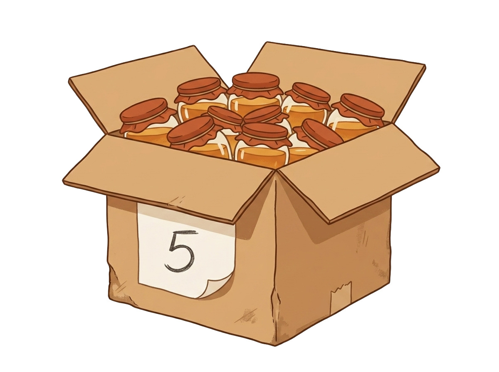
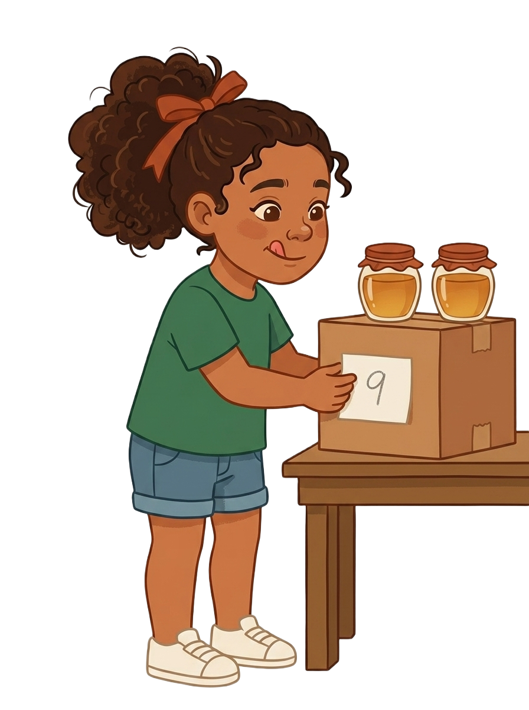

Doña Nurys guardó una caja del año pasado. Dice cinco por fuera y por dentro no hay cinco.

Abre la caja vieja y busca dónde estuvo el error.
La etiqueta dice cinco. Ábrela y cuenta.
Cambia la mesa de arriba; la de abajo no se toca.
Toca las piezas en el orden que arma la regla.
Aquí se irá armando la regla.
Pon en cada fila cuántos potes lleva la caja.
| Caja | Potes | ¿Cuadró? |
|---|
Escribe en cada etiqueta cuántos potes hay.
Mete un pote y di la cuenta sin volver a empezar.
Acomoda los once potes y anota la cuenta.
Cada acomodo que pruebes se anota aquí.
Escribe qué dice el número de la etiqueta.
Son casi las tres. ¿Aguantan las cinco cajas una revisión?
